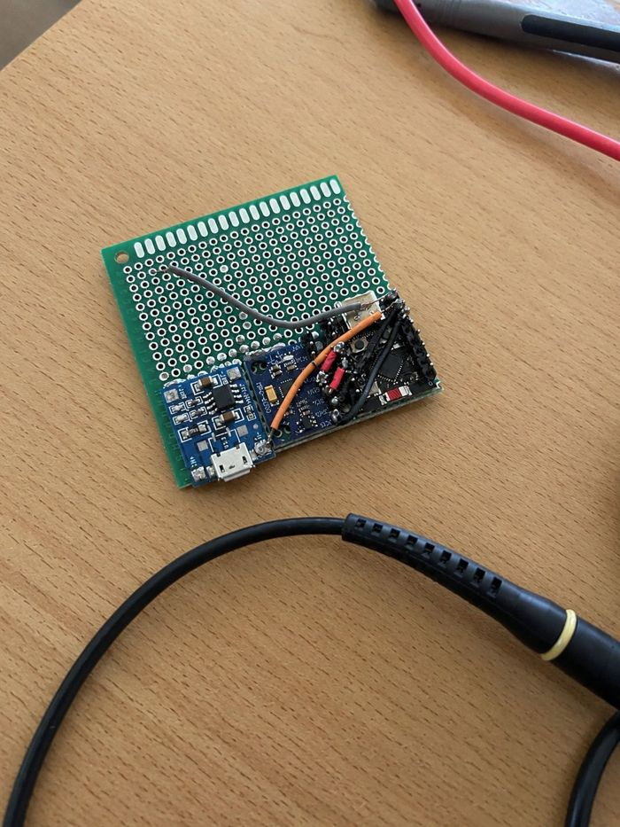
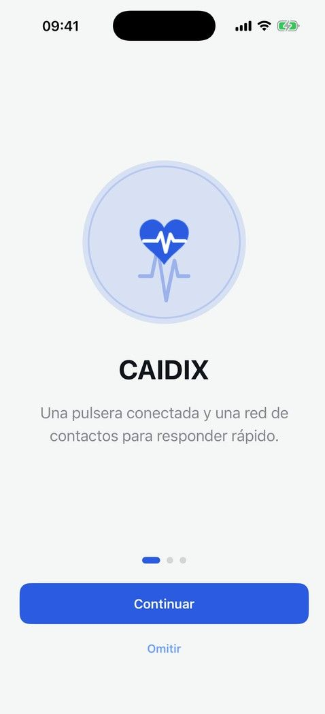
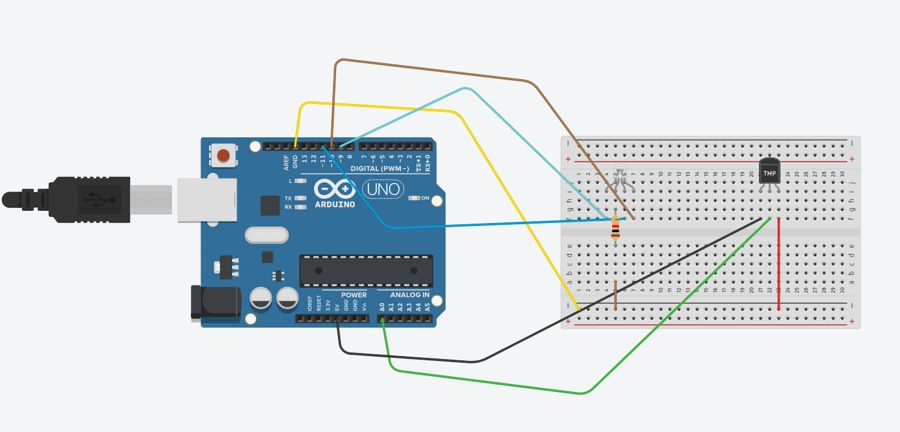

Un dispositivo portátil que utiliza sensores de movimiento para detectar caídas en tiempo real y enviar una alerta automática, brindando una respuesta rápida y mayor seguridad a quien lo usa. El proyecto abarca desde el armado y soldado de los componentes electrónicos hasta la programación del sistema de detección.
Materia: Laboratorio y Software

La aplicación del celular que se conecta con la pulsera. Cuando detecta una caída, muestra una cuenta regresiva y si la persona no responde, avisa a sus contactos de emergencia.
Materia: Software

Un circuito con Arduino UNO y un sensor de temperatura. Según la temperatura que mide, el LED RGB cambia de color. Primero lo armé en Tinkercad y después lo programé en Arduino IDE.
Materia: Laboratorio